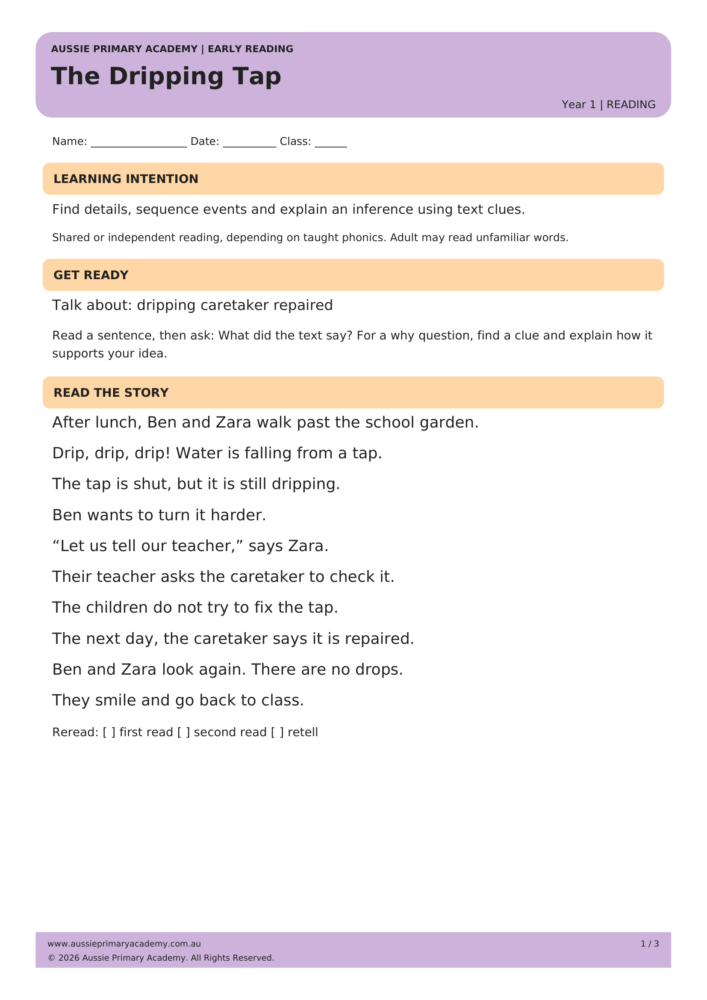

Year 1 · Reading · Comprehension · Free Printable
A Picnic Change
Free Year 1 reading comprehension worksheet. Practise understanding characters and events in a short narrative text.
Worksheet Preview

Learning Intention
Students use comprehension strategies to understand and discuss a familiar narrative about a picnic change.
Australian Curriculum
AC9E1LY05
Australian Curriculum Version 9.0 · English
Teacher / Parent Notes
Read the story together once. Discuss who, what and where before children answer independently.
Skills Practised
- Reading comprehension
- Characters and events
- Literal questions
- Text evidence
Resource Details
Year level: Year 1
Subject: English · Reading
Curriculum alignment: AC9E1LY05 · Australian Curriculum V9.0
Format: Free printable worksheet (PDF)